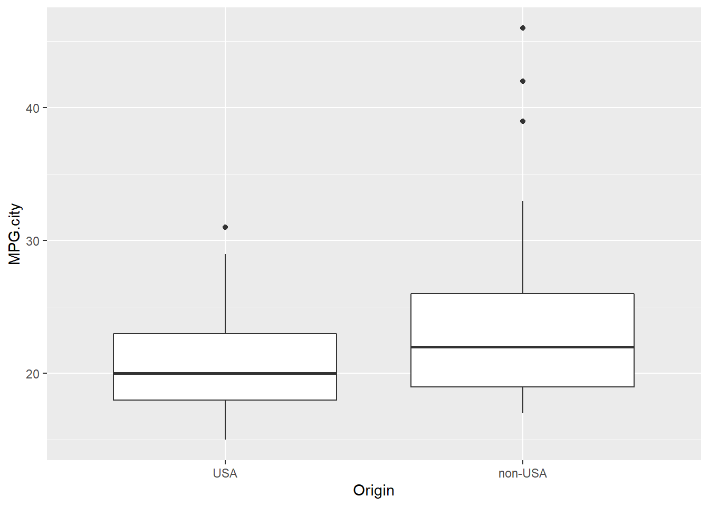
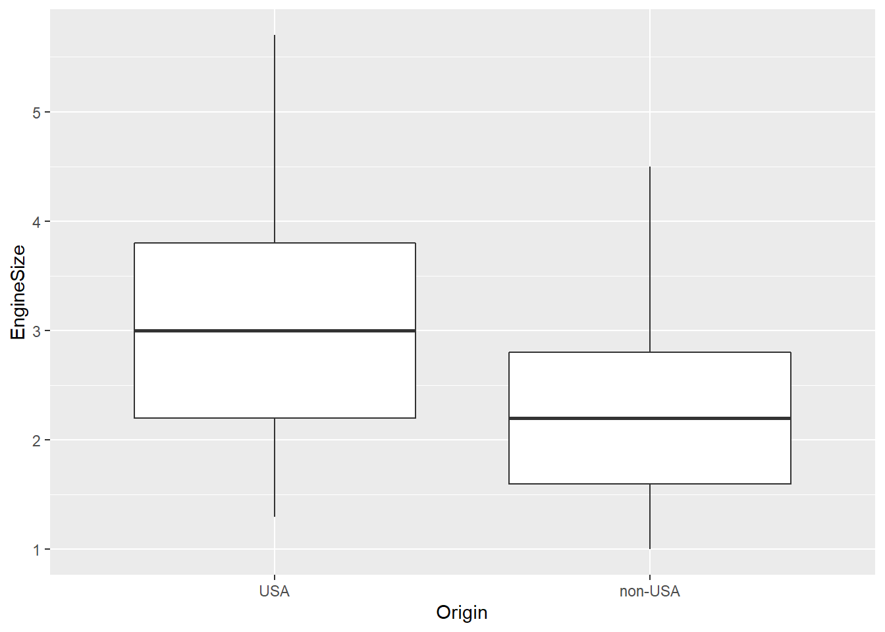

This week on RCloud: https://rstudio.cloud/project/1074544
Datasets for this class:
A random sample of 1,000 federal personnel records for March 1994:
library(dplyr)
library(ggplot2)Cars93 <- MASS::Cars93 # Load the dataset from package MASS
names(Cars93) # Variable names## [1] "Manufacturer" "Model" "Type"
## [4] "Min.Price" "Price" "Max.Price"
## [7] "MPG.city" "MPG.highway" "AirBags"
## [10] "DriveTrain" "Cylinders" "EngineSize"
## [13] "Horsepower" "RPM" "Rev.per.mile"
## [16] "Man.trans.avail" "Fuel.tank.capacity" "Passengers"
## [19] "Length" "Wheelbase" "Width"
## [22] "Turn.circle" "Rear.seat.room" "Luggage.room"
## [25] "Weight" "Origin" "Make"Are American cars more or less fuel efficient than foreign cars?
American vs. Foreign Cars: Comparing Distributions of MPG.city using boxplots:
Cars93 %>% ggplot(mapping = aes(x = Origin, y = MPG.city)) + geom_boxplot()
Let’s calculate mean MPG.city for the two groups of cars:
Cars93 %>% select(MPG.city, Origin) %>% group_by(Origin) %>% summarize(Mean.MPG.city = mean(MPG.city, na.rm = T))## # A tibble: 2 x 2
## Origin Mean.MPG.city
## <fct> <dbl>
## 1 USA 21.0
## 2 non-USA 23.9Bivariate regression: MPG.city ~ Origin
lm(MPG.city ~ Origin, data = Cars93) %>% summary()##
## Call:
## lm(formula = MPG.city ~ Origin, data = Cars93)
##
## Residuals:
## Min 1Q Median 3Q Max
## -6.8667 -3.8667 -0.9583 2.0417 22.1333
##
## Coefficients:
## Estimate Std. Error t value Pr(>|t|)
## (Intercept) 20.9583 0.7875 26.612 <2e-16 ***
## Originnon-USA 2.9083 1.1322 2.569 0.0118 *
## ---
## Signif. codes: 0 '***' 0.001 '**' 0.01 '*' 0.05 '.' 0.1 ' ' 1
##
## Residual standard error: 5.456 on 91 degrees of freedom
## Multiple R-squared: 0.06761, Adjusted R-squared: 0.05737
## F-statistic: 6.599 on 1 and 91 DF, p-value: 0.01183Do American cars in the sample tend to have larger engines?
Boxplot for EngineSize:
Cars93 %>% ggplot(mapping = aes(x = Origin, y = EngineSize)) + geom_boxplot()
Mean EngineSize:
Cars93 %>% dplyr::select(EngineSize, Origin) %>% group_by(Origin) %>% summarize(Mean.EngineSize = mean(EngineSize))## # A tibble: 2 x 2
## Origin Mean.EngineSize
## <fct> <dbl>
## 1 USA 3.07
## 2 non-USA 2.24Modeling MPG.city based on car Origin and EngineSize:
lm(MPG.city ~ Origin + EngineSize, data = Cars93) %>% summary()##
## Call:
## lm(formula = MPG.city ~ Origin + EngineSize, data = Cars93)
##
## Residuals:
## Min 1Q Median 3Q Max
## -10.5478 -2.6409 -0.5944 1.9210 17.2802
##
## Coefficients:
## Estimate Std. Error t value Pr(>|t|)
## (Intercept) 32.9393 1.4629 22.517 < 2e-16 ***
## Originnon-USA -0.3126 0.9050 -0.345 0.731
## EngineSize -3.9068 0.4383 -8.913 5.22e-14 ***
## ---
## Signif. codes: 0 '***' 0.001 '**' 0.01 '*' 0.05 '.' 0.1 ' ' 1
##
## Residual standard error: 3.999 on 90 degrees of freedom
## Multiple R-squared: 0.5048, Adjusted R-squared: 0.4938
## F-statistic: 45.87 on 2 and 90 DF, p-value: 1.848e-14